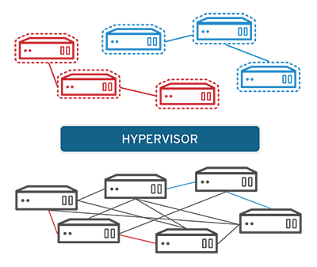

Virtualization
What is virtualization?
Virtualization uses software to create an abstraction layer over computer hardware that allows the hardware elements of a single computer—processors, memory, storage and more—to be divided into multiple virtual computers, commonly called virtual machines (VMs). Each VM runs its own operating system (OS) and behaves like an independent computer, even though it is running on just a portion of the actual underlying computer hardware.
It follows that virtualization enables more efficient utilization of physical computer hardware and allows a greater return on an organization’s hardware investment.
Today, virtualization is a standard practice in enterprise IT architecture. It is also the technology that drives cloud computing economics. Virtualization enables cloud providers to serve users with their existing physical computer hardware; it enables cloud users to purchase only the computing resources they need when they need it, and to scale those resources cost-effectively as their workloads grow.
Virtualization is technology that lets you create useful IT services using resources that are traditionally bound to hardware. It allows you to use a physical machine’s full capacity by distributing its capabilities among many users or environments.
In more practical terms, imagine you have 3 physical servers with individual dedicated purposes. One is a mail server, another is a web server, and the last one runs internal legacy applications. Each server is being used at about 30% capacity—just a fraction of their running potential. But since the legacy apps remain important to your internal operations, you have to keep them and the third server that hosts them, right?

Traditionally, yes. It was often easier and more reliable to run individual tasks on individual servers: 1 server, 1 operating system, 1 task. It wasn’t easy to give 1 server multiple brains. But with virtualization, you can split the mail server into 2 unique ones that can handle independent tasks so the legacy apps can be migrated. It’s the same hardware, you’re just using more of it more efficiently.

Benefits of virtualization
Virtualization brings several benefits to data center operators and service providers: Resource efficiency: Before virtualization, each application server required its own dedicated physical CPU—IT staff would purchase and configure a separate server for each application they wanted to run. (IT preferred one application and one operating system (OS) per computer for reliability reasons.) Invariably, each physical server would be underused. In contrast, server virtualization lets you run several applications—each on its own VM with its own OS—on a single physical computer (typically an x86 server) without sacrificing reliability. This enables maximum utilization of the physical hardware’s computing capacity. Easier management: Replacing physical computers with software-defined VMs makes it easier to use and manage policies written in software. This allows you to create automated IT service management workflows. For example, automated deployment and configuration tools enable administrators to define collections of virtual machines and applications as services, in software templates. This means that they can install those services repeatedly and consistently without cumbersome, time-consuming. and error-prone manual setup. Admins can use virtualization security policies to mandate certain security configurations based on the role of the virtual machine. Policies can even increase resource efficiency by retiring unused virtual machines to save on space and computing power. Minimal downtime: OS and application crashes can cause downtime and disrupt user productivity. Admins can run multiple redundant virtual machines alongside each other and failover between them when problems arise. Running multiple redundant physical servers is more expensive. Faster provisioning: Buying, installing, and configuring hardware for each application is time-consuming. Provided that the hardware is already in place, provisioning virtual machines to run all your applications is significantly faster. You can even automate it using management software and build it into existing workflows.
Types of virtualization
To this point we’ve discussed server virtualization, but many other IT infrastructure elements can be virtualized to deliver significant advantages to IT managers (in particular) and the enterprise as a whole. In this section, we'll cover the following types of virtualization:Desktop virtualization Network virtualization Storage virtualization Data virtualization Application virtualization Data center virtualization CPU virtualization GPU virtualization Linux virtualization Cloud virtualization Desktop virtualization
Desktop virtualization
lets you run multiple desktop operating systems, each in its own VM on the same computer.
There are two types of desktop virtualization: Virtual desktop infrastructure (VDI) runs multiple desktops in VMs on a central server and streams them to users who log in on thin client devices. In this way, VDI lets an organization provide its users access to variety of OS's from any device, without installing OS's on any device. See "What is Virtual Desktop Infrastructure (VDI)?" for a more in-depth explanation. Local desktop virtualization runs a hypervisor on a local computer, enabling the user to run one or more additional OSs on that computer and switch from one OS to another as needed without changing anything about the primary OS. For more information on virtual desktops, see “Desktop-as-a-Service (DaaS): A Complete Guide.”
Network virtualization
Network virtualization uses software to create a “view” of the network that an administrator can use to manage the network from a single console. It abstracts hardware elements and functions (e.g., connections, switches, routers, etc.) and abstracts them into software running on a hypervisor. The network administrator can modify and control these elements without touching the underlying physical components, which dramatically simplifies network management.
Types of network virtualization include software-defined networking (SDN), which virtualizes hardware that controls network traffic routing (called the “control plane”), and network function virtualization (NFV), which virtualizes one or more hardware appliances that provide a specific network function (e.g., a firewall, load balancer, or traffic analyzer), making those appliances easier to configure, provision, and manage.
Storage virtualization
Storage virtualization enables all the storage devices on the network— whether they’re installed on individual servers or standalone storage units—to be accessed and managed as a single storage device. Specifically, storage virtualization masses all blocks of storage into a single shared pool from which they can be assigned to any VM on the network as needed. Storage virtualization makes it easier to provision storage for VMs and makes maximum use of all available storage on the network.
Data virtualization
Modern enterprises store data from multiple applications, using multiple file formats, in multiple locations, ranging from the cloud to on-premise hardware and software systems. Data virtualization lets any application access all of that data—irrespective of source, format, or location.
Data virtualization tools create a software layer between the applications accessing the data and the systems storing it. The layer translates an application’s data request or query as needed and returns results that can span multiple systems. Data virtualization can help break down data silos when other types of integration aren’t feasible, desirable, or affordable.
Application virtualization
Application virtualization runs application software without installing it directly on the user’s OS. This differs from complete desktop virtualization (mentioned above) because only the application runs in a virtual environment—the OS on the end user’s device runs as usual. There are three types of application virtualization:
Local application virtualization: The entire application runs on the endpoint device but runs in a runtime environment instead of on the native hardware. Application streaming: The application lives on a server which sends small components of the software to run on the end user's device when needed. Server-based application virtualizationThe application runs entirely on a server that sends only its user interface to the client device. Data center virtualization Data center virtualization abstracts most of a data center’s hardware into software, effectively enabling an administrator to divide a single physical data center into multiple virtual data centers for different clients.
Each client can access its own infrastructure as a service (IaaS), which would run on the same underlying physical hardware. Virtual data centers offer an easy on-ramp into cloud-based computing, letting a company quickly set up a complete data center environment without purchasing infrastructure hardware.
CPU virtualization
CPU (central processing unit) virtualization is the fundamental technology that makes hypervisors, virtual machines, and operating systems possible. It allows a single CPU to be divided into multiple virtual CPUs for use by multiple VMs.

At first, CPU virtualization was entirely software-defined, but many of today’s processors include extended instruction sets that support CPU virtualization, which improves VM performance.
GPU virtualization
A GPU (graphical processing unit) is a special multi-core processor that improves overall computing performance by taking over heavy-duty graphic or mathematical processing. GPU virtualization lets multiple VMs use all or some of a single GPU’s processing power for faster video, artificial intelligence (AI), and other graphic- or math-intensive applications.
Pass-through GPUs make the entire GPU available to a single guest OS. Shared vGPUs divide physical GPU cores among several virtual GPUs (vGPUs) for use by server-based VMs. Linux virtualization Linux includes its own hypervisor, called the kernel-based virtual machine (KVM), which supports Intel and AMD’s virtualization processor extensions so you can create x86-based VMs from within a Linux host OS.
As an open source OS, Linux is highly customizable. You can create VMs running versions of Linux tailored for specific workloads or security-hardened versions for more sensitive applications.
Cloud virtualization
As noted above, the cloud computing model depends on virtualization. By virtualizing servers, storage, and other physical data center resources, cloud computing providers can offer a range of services to customers, including the following:
Infrastructure as a service (IaaS): Virtualized server, storage, and network resources you can configure based on their requirements. Platform as a service (PaaS): Virtualized development tools, databases, and other cloud-based services you can use to build you own cloud-based applications and solutions. Software as a service (SaaS): Software applications you use on the cloud. SaaS is the cloud-based service most abstracted from the hardware.